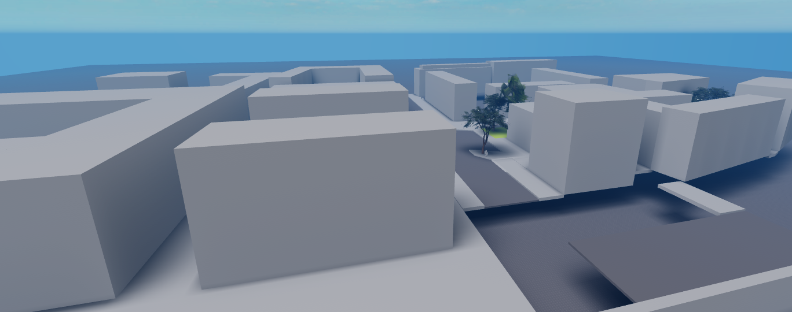

Present+Future
Currently I want to learn programming in Go or C. I also want to create a Roblox game and have a few ideas - continuing the Commons project, maybe building something simmiliar to my old project Atomgroup Science Innovations. Also I want to build a city, and continue working on Infinipoly. As for working for other groups, I want to take on scripting more than on building.
I'm still finding better ways to be more productive and take great notes. Also I stared logging my time - big thanks to Devine Lu Linvega and everyone from Merveilles Mastodon instance, I learned a lot of interesting things from them.